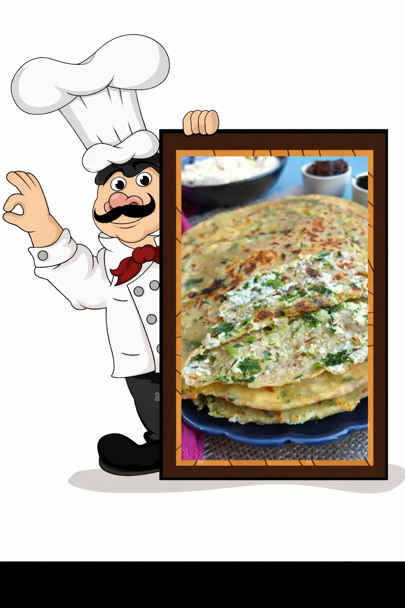

🧀 Paneer Paratha (Stuffed)
🧺 Ingredients
For the Stuffing
- 🧀 Paneer – 200 g (grated)
- 🧅 Onion – ½ medium, finely chopped
- 🌶️ Green chillies – 4, finely chopped
- 🌿 Coriander leaves – 2–3 tbsp, finely chopped
- 🌶️ Red chilli powder – ½ tsp
- 🧂 Salt – to taste
- 🌿 Coriander powder – 1½ tbsp
- 🌿 Cumin powder – ½ tsp
- 🌶️ Garam masala – 1½ tsp
For the Dough
- 🌾 Wheat flour (Atta) – as required
- 🧂 Salt – a pinch
- 💧 Water – to knead
- 🛢️ Oil – 1 tsp (optional)
For Cooking
- 🧈 Butter or oil – for roasting

👩🍳 Method
- 🌾 In a bowl, mix wheat flour and salt. Add water gradually and knead into a soft dough. Cover and rest for 15–20 minutes.
- 🧀 In another bowl, add grated paneer, chopped onion, green chillies, and coriander leaves.
- 🌶️ Add red chilli powder, coriander powder, cumin powder, garam masala, and salt. Mix well to form a crumbly stuffing.
- ⚪ Divide dough into equal balls. Roll one ball slightly and place stuffing in the center.
- 🔒 Bring edges together, seal properly, and gently flatten.
- 🍞 Roll into a medium-thick paratha using dry flour.
- 🔥 Heat a tawa on medium flame and place the paratha on it.
- 🔁 Flip when bubbles appear. Apply oil or butter on both sides.
- ✨ Cook until golden brown spots appear on both sides.
- 🍽️ Serve hot with butter, curd, or pickle.